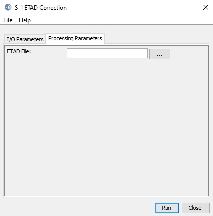

| ETAD Correction for GRD Production |
|
The operator applies the ETAD correction to Sentinel-1 GRD product.
The Extended Timing Annotation Dataset (ETAD) for Copernicus Sentinel-1
is a new auxiliary product developed by ESA (with DLR as contractor),
providing users with corrections to improve geometric accuracy of
Sentinel-1 SLC images to centimetric levels. The product contains
analysis-ready layers for removing the atmospheric path delays, the
solid Earth tidal deformation, and the Sentinel-1 system specific
effects related to the IPF SAR processor. The current operator ny
default applies the Range Correction Sum layer and Azimuth Correction
Sum layer to GRD product only.

[1] S1-ETAD Project: Product definition Document, Doc. ID ETAD-DLR-PS-0002, Issue 2.4, Date 06.03.2023, Page 1 of 37.
[2] S1-ETAD: Product Format Specification Document, Doc. ID ETAD-DLR-PS-0014, Issue 1.8, Date 06.03.2023, Page 1 of 63.